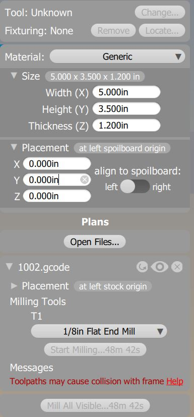
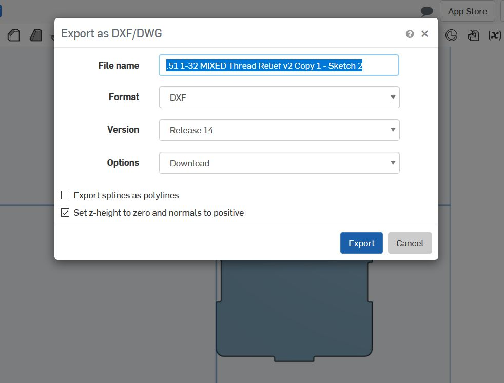
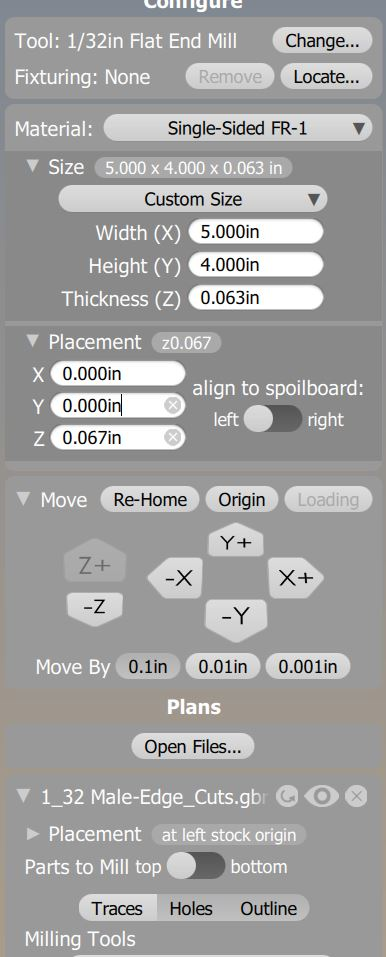
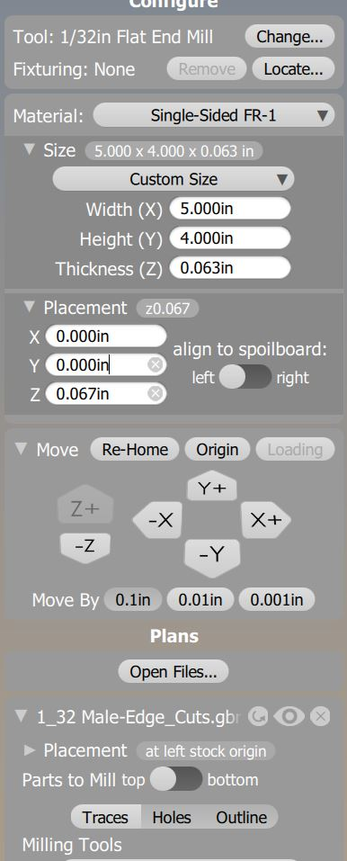

Lukas' Assignment 6: Mold and Casting!
Overview:

Synthesis / Define
Design prompt criteria:Ideation / Develop
For this weeks project, I started off by considering making a mold with a functional purpose.
Considering that fathers day is coming up, I decided that a Sextant mold would entertain my father and he could use it as a business asset.
After I tried making a Sextant, I decided to keep it it simple, I downloaded a Sextant to act as the Model inside the Positive Mold.

Test / Implementation / Deliver
As per usual with Digital Fabrication, tweaking the models and the output is a necesarey portion of the process.
Initially I focused on learning the software to design my mold, utilizing Onshape for the Mold Base then Fusion 360 for the Sextant Model and for the assembly.
This process enabled me to become much more familiar with Fusion 360.
For example I learned how to convert the Stl models from Thingiverse using the Mesh to Bbodies function.
By decided to learn more about Fusion 360, and CNC tooling system.
I became familiar within the different modes such as Manufacturating adding new operations like manual tool changes between 3D milling operations.


Problem:
Nadia suggest using an 1/8th in Bantam tools than 1/16th so that it the important layersUsed the Mesh to Bbodies to Move the Sextant Over as the path hit the wall The INtracies of the Sextant have to be milled with 1/32nd While


Solution:
However after recutting the female finger joint pieces of .051 and .052 did not fit at all.
The Female piece that ended up with the best press fit was .0525" wide for a .05" male piece.
Additionally i corrected some of the model dimensions and constraints that were "off" from one another by a hundredth of inch which helped the piece be more flush with one another.
The video below demonstrates the updated cube could pass the shake test!
Reflection
In hindsight, my joints were to simple compared to the advanced techniques.
However teaching others is an extremely helpful way to learn and I managed to onboard 6+ people to the tooling process which in turn aided myself in becoming extremely familiar with the machines and settings.
Attribution:
Joshua, Angel, Dhwani Vekaria, Julie Do, Huan Lu, helped each other out with best practices. Cindy Helped
Machine Settings:

 
